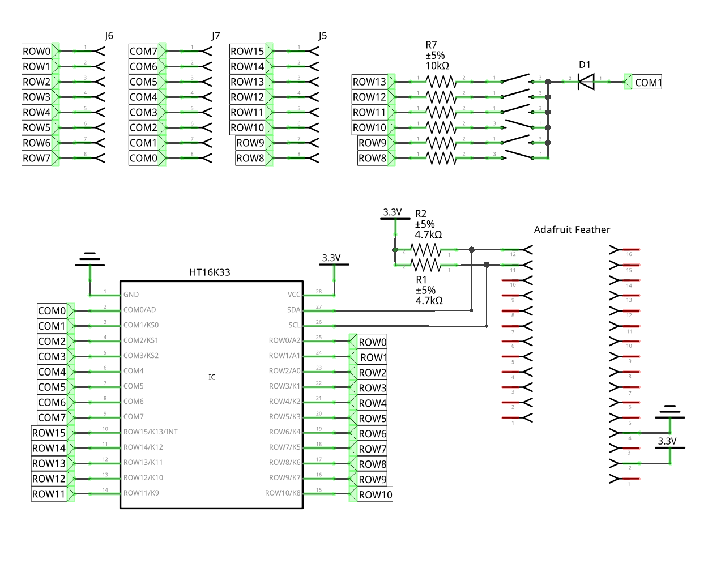

PewPew Lite Schematic¶
Published on 2017-07-05 in PewPew FeatherWing.
I decided to make a proper schematic for that PewPew Lite board I ordered recently. You know, so that it’s more complete and also so it’s easier to figure out what is what when I will be programming it. Most PCB programs force you to start with the schematic, and only do the PCB design later, but I’m using Fritzing specifically because it lets me do it in any order – and I get much better PCB layout this way, because many times it doesn’t really matter which pin I use for a particular function, so I can as well just pick the one that is easiest to route.
Once I did that, I brought up the datasheet for the HT16K33 chip to see whether I will need a common cathode or a common anode LED matrix, and I noticed a grave error: the buttons are connected to the address select pin (COM0) and not to the buttons pins (COM1-COM3). Oops. (The schematic above has that already fixed.)
Of course I quickly corrected that. Fortunately, the two pins are close together and close the the diode, so it should be relatively easy to cut the trace and connect it to the other pin with a piece of wire. Still very embarrassing. I guess next time I should make the schematic before ordering the PCB.